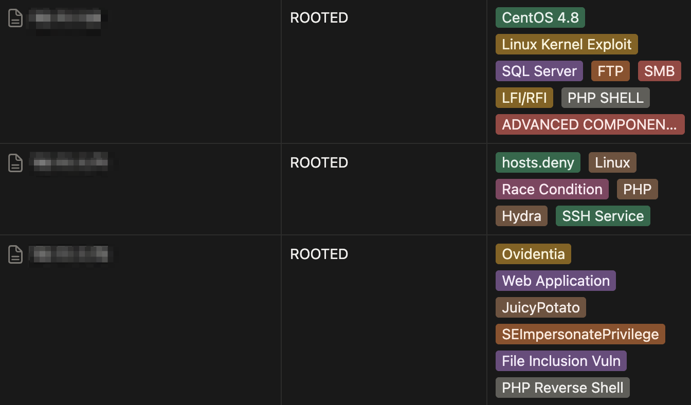
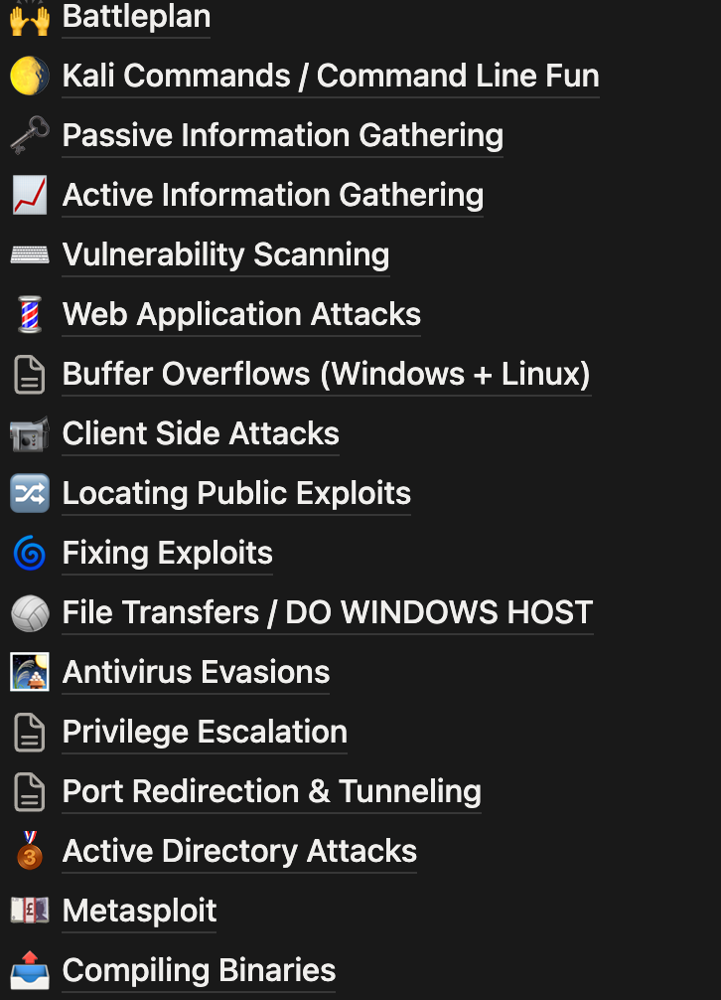

OSCP Preparation Revisited in 2025
Looking back at a stressful year…
I wanted to write this because the OSCP was genuinely one of the hardest things I’ve done in my career so far, especially considering where I started - as I had comparably less knowledge than my peers when I began working as a security engineer. When I had obtained the OSCP, I had been in the field for a year and a half, but I learned everything on the job, through real client work, mistakes, panic, and figuring things out as I went.
Trying to do the OSCP on top of that felt like having two jobs at the same time. It was rough. Many months of stress, pressure, and feeling like I was drowning half the time. There simply was not enough time within the day to complete all the assigned preparation tasks, in addition to the day-to-day responsibilities of an engineering job.
How it started - January 2022
I began preparations around a year into the job. My company was heavily pushing the certificate (rightfully so), so I bought the 3-month lab time and the exam voucher immediately. My first attempt was honestly pretty bad. I mainly did Proving Grounds, watched IppSec, and read the PWK PDF. I didn’t actually do enough machines myself, and it showed. I failed with nothing much to show for it, but it was a good slap in the face. Watching other people hack was not the same as doing it - this was a big lesson learned for me that fueled my following preparation for the next attempt.
Second Attempt - July 2022
After the mandatory cooldown period, I spent the next six months rebuilding from scratch.
By the time I went into my second attempt, I had:
- Completed around 30 official OSCP lab machines
- Rooted around 30 Proving Grounds practice boxes
- Finished all the PWK-200 lab exercises to make sure the lab report was good-to-go
That time, I scored 60 points (including the 10-point bonus for the lab report and exercises). I missed the passing mark by a single standalone root.
What hurt the most was that the point of failur was the Active Directory set privilege escalation, which was ironic, since testing real-life corporate AD environments was literally part of my job. But in that moment, with the exam pressure, the sleeplessness, and the timer ticking down, I had attributed it to my brain just blanking out.
Still, that second failure built more confidence than the first. I actually understood what was going on this time, and was feeling confident that I had obtained some results at least within the range.
Third (and final) Attempt - October 2022
Third time’s the charm they say, or at least, it was for me - and I was so glad.
By this point in my preparation attempts, I had:
- Completed ~57 Proving Grounds machines
- Rooted ~40 official OSCP lab machines
- Refined my internal Notion workspace into a fully indexed “second brain” (which I will divulge on later)
By the 8th or 10th hour, I had obtained root on all the standalone machines - which, combined with the existing lab report points at the time, already gave me enough points to pass (60 from the standalone, 10 points for the lab). And somehow, I got the same AD set as before. I swear to God, even with all the time that I had left I still don’t know how to solve it.
But I passed.
I managed to root all three standalone machines and gather all the evidence needed for the documentation within this attempt. I barely slept, took fewer breaks than before, and worked nonstop until the last few hours when I switched into more serious documentation mode - writing out the attack paths with the evidence collected. The exam, overall, was brutal - ttons of rabbit holes, decoys, and red herrings that didn’t lead anywhere. But it also forced me to rely on process over panic.
What Helped
My Notion “second brain”
One of the biggest things that helped me pass was the Notion workspace I built for OSCP. It basically turned into this giant “second brain” where I dumped everything I learned. I kept it super organized so I could quickly look things up during the exam.

I had tracking tables for all the OSCP Lab and Proving Grounds machines, information within tags included:
- the IPs,
- whether I rooted them,
- the main vulnerabilities,
- tags for things like SMB, MSSQL, Tomcat, Shellshock, payload types, etc.
- a small note if the machine had a concept i wanted to remember.
It made patterns really easy to recognize. If I saw a certain service or behavior on an exam machine, I could instantly recall what had worked for me before.

I also had separate pages for each major topic: Windows & Linux enumeration and privilege escalation, OWASP 10 web application vulnerability guides such as SQL injection, file inclusion, useful payloads, reverse shells, Active Directory stuff, etc. The idea was just to have everything I commonly forgot written in one place so I wasn’t panicking and trying to remember syntax at 3 AM.
Day-of checklists
I made “day-of” checklists for Windows, Linux, and each common service. They were simple but incredibly helpful when exam stress makes you forget the most basic things. It kept me from skipping steps and falling into rabbit holes too early.
General study notes
Lastly, I had a whole section that was basically my personal study track: things like info gathering, web attacks, vulnerability scanning, port tunneling, BOFs, AD attacks, Metasploit usage, file transfers, etc. Not super detailed writeups, but instead they were a list of accumulated knowledge including commands, reminders, and patterns I kept using over and over again.